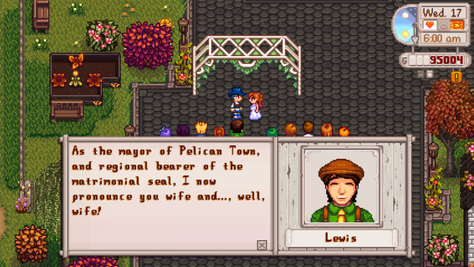
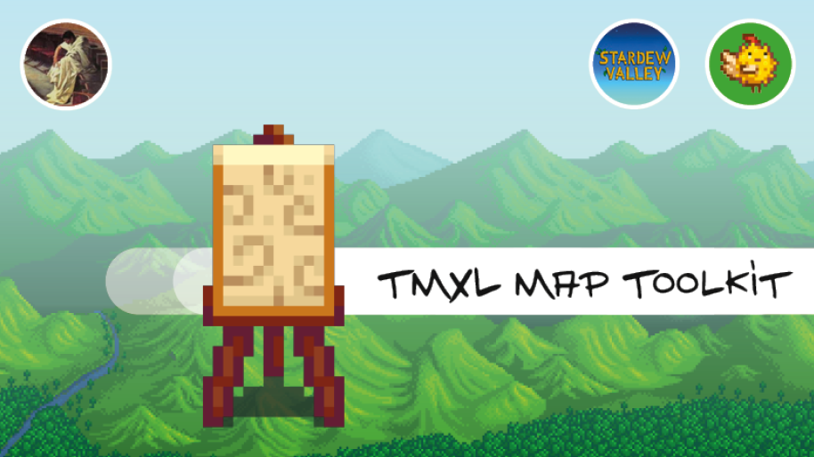

these mods will be the base to becoming a stardew homewrecker. We have a
selection of other mods you can use to add on to your
homewrecking experience
for now download the recommended mods, we will show you how to add them to the game in the next step
Most of our mods will be sourced from NexusMods, please make an account
with them to be able to download mods
Content Patcher is a staple, a ton of other mods will require it
allows you to date select villagers
allows you and mods to edit your future spouse rooms
